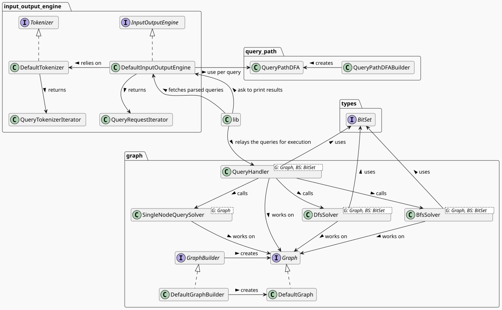

Approach
- Working version in week 1
- Architecture to optimize on
- Get people to work ASAP
- Application Architecture
- Two teams of 2: IO and Algo
- Define orange interfaces between
- Define yellow interfaces
Architecture Structure

General Optimization Goals
- no special optimizations; everything general
- no hardware optimizations; no time; other things more important
- everything safe
- many, many tests; debug_asserts
- choose efficient data structure and architecture before implementation
- fulfil tests as soon as possible
- leave other optimizations for later
Heuristic & Start Everwhere
BFS – and when to use it
(A) -B-> (C)(A) -B->{1,7} (C)(A) -B->{1,-} (C)(A) [-B-> (M)]{1,-} (C)... --> (A) [-B-> (M)]{1,-} (C)- not:
(A) -B->{3,-} (C)
Optimization Benchmarks
Custom Memeplus Benchmark
Lessons learned
- Great interfaces are great
- designing accurate Heuristics is hard
- Test-driven development can be fast
- Rust Ownership is challenging but
- Rust has great tooling
- Iterators are cool
- no UB; easier debugging